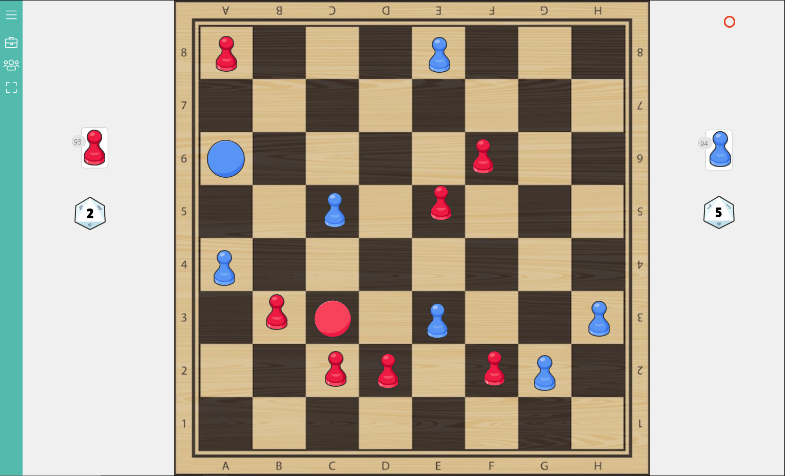
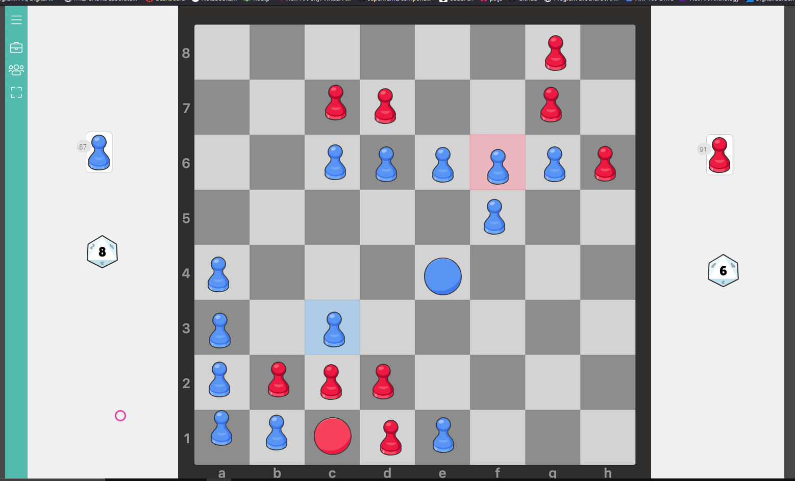
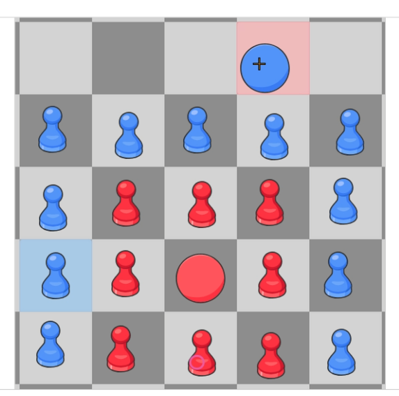

Development of proprietary Intro: Since the start of this project, there have been many changes through the iteration process. I've played the game over 15 times, and have made more changes than I can remember and yet I still believe that this game is flawed and incomplete. As of the current version, the game feels slow and there has yet to be a clear prevailing strategy. It's very difficult to predict which player has the better position as there can often be too many variables to juggle. Most of the wins that have occurred were not planned, and would just happen to be the case when the player saw the moment. I fear that there is a meta-game strategy that has yet to be discovered, this issue is obvious in the game tic-tac-toe. However, if there happens to be an issue of a meta-game strategy, at least it's not easily identifiable. Nevertheless, the game has improved greatly since its creation, and I think there is some real potential in making an delighful area-control strategy game. One very identefiable game mechanic from boardgamegeek.com that naturally emerged when developing proprietary was the mechanic chaining. The game's initial setup has barely changed, it's been an 8x8 board with 2 kings and infinite pawns since the very beginning, which took both my partner Anita and I 20 minutes to think up. The rules have been the most tricky since every adaptation would cause for more debate on what would be more fun for players. Chapter 1 - Dice: We began by rolling dice to determine where pawns would be placed, at this stage of the game, the king could only run away, as pawns could not yet be taken. Here was the result of our first game (blue won):

The dice mechanic made the game more luck based, but this first playtest actually felt really successful. We were both happy with the fact that there was a win condition that worked the first time we played. Chapter 2 - Piece Interactions: While playing the same game with my second playtest partner Anita, we both agreed that the dice mechanic was sloppy. So later that day I hit up my good friend Alex to play the game with me for further testing. This is when the development of this project would really take off. I made a custom board to make the setup process easier. We then removed the dice and gave the players the ability to place pawns wherever they wished. The realization was instant; there needed to be more interaction between pieces. We first added the ability for kings to take pawns that weren't defended. This led to a game that I titled “first fun game” in my notes. Here's what the result looked like:
Chapter 3 - Too Many Decisions: We would continue experimenting, and asked the question” what if pawns could take other pawns? Or if Kings could take their own colored pawns? We also shrunk the board to a 5x5 instead of the original 8x8. This made games go by much faster, which was great for testing. I decided to reuse the original 8x8 board for the current version, but am still debating whether it be changed again to the 5x5 board. We made a rule that if there were two adjacent pawns to an enemy pawn, the enemy pawn could be replaced with a new piece from the attacking player. This felt good at first, but we quickly realized that this mechanic would oftentimes lead to a stalemate, as both players would set up a defence that was impenetrable. Here's what that looked like:
This led us to making it so only a single pawn was needed to take another pawn. This made the game much more easy to understand, and made the game have more action. Conclusion: The game in its current state works. There is an eventual winner, and strategy seems to be taking place. In my most recent testing with my other friend Coleman, he mentioned the idea of a graveyard for pawns. I really liked this idea because that could create a whole variety of new game mechanics. Maybe there could be a mechanic where captured pieces can be returned to the board like in shogi? Or maybe if you capture enough pieces you could trade them in for a stronger piece (this would maybe even make the game feel like a MOBA which would be cool)? There no doubt needs to be some more interesting mechanics implemented. Which will require much more play testing and iteration…